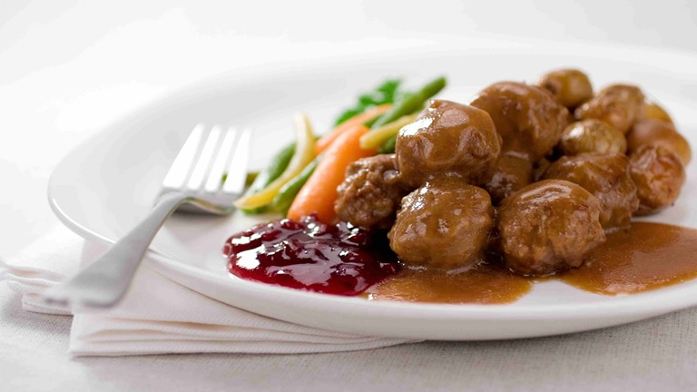

Swedish Meatballs

Swedish Meatballs (photo from https://www.bbcgoodfood.com)
Prep: 10 min Cook: 10 min Yield: 2 servings
Ingredients
1 pound lean ground beef
2 cloves garlic chopped
2 tablespoons diced onion
1 large egg
1/2 teaspoon salt
1/2 teaspoon ground black pepper
2 tablespoons bread or cracker crumbs
2 tablespoons chopped fresh parsley (optional)
olive oil
Directions
Mix together all ingredients for the meatballs. Set aside.
Using a tablespoon scoop or spoon, form meatballs from the ground beef mixture.
Drizzle in enough olive oil to lightly coat the bottom of a skillet over medium heat. Drop formed meatballs into the heated skillet, turning occasionally to ensure that all sides of the meatball have been browned, about 7-10 minutes.
Remove the meatballs from the skillet or saute pan and drain on a plate lined with paper towels.
Yield: 8-10 servings